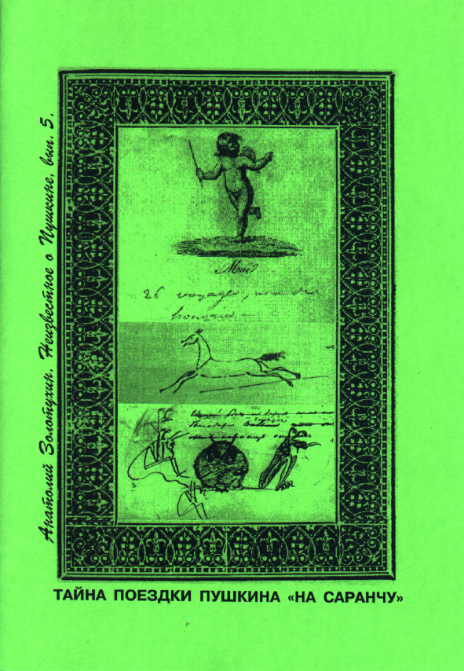

«Саранча летела, летела И села. Сидела, сидела, Все съела И вновь улетела». А.С. Пушкин
Известно, что 22 мая 1824 года М. С. Воронцов выписал командировку для Пушкина, который в то время находился под его надзором в южной ссылке, в Одессе. В ней Новороссийский генерал губернатор и полномочный наместник Бессарабской области писал: “Состоящему в штате моем ведомстве коллегии иностранных дел господину коллежскому секретарю Пушкину.
Желая удостовериться о количестве появившейся в Херсонской губернии саранчи, равно и о том с каким успехом исполняются меры, преподанные мною к истреблению оной, я поручаю вам отправиться в уезды Херсонский, Елисаветградский и Александрийский.
По прибытии в города Херсон, Елисаветград и Александрию явитесь в тамошние общие уездные присутствия и потребуйте от них сведения: в каких местах саранча возродилась, в каком количестве, какие учинены распоряжения к истреблению оной и какие средства к тому употребляются.
После сего имеете осмотреть важнейшие места, где саранча наиболее возродились и обозреть с каким успехом действуют употребляемые к истреблению оной средства и достаточны ли распоряжения, учиненные уездными присутствиями.
О всем что по сему вами найдено будет рекомендую донести мне.”
Получив это предписание, 22 мая Пушкин пишет оскорбленное письмо А.И. Казначееву, рассчитывая на то, что оно попадет Воронцову:”… Семь лет я службою не занимался, не написал ни одной бумаги, не был в сношениях ни с одним начальником… Мне скажут, что я получая 700 рублей (Казначеев получал 3000 руб. – А.3.), обязан служить… Правительству угодно вознаграждать некоторым образом мои утраты, я принимаю эти 700 рублей не так, как жалование чиновника, но как паек ссылочного невольника, Я готов от них отказаться, если не могу быть властен в моем времени и занятиях… Знаю, что довольно этого письма, чтоб меня, как говорится, уничтожить. Если граф прикажет подать в отставку, я готов;..” Поэт не состоял в штате у Воронцова, деньги на свое содержание он получал от Министра иностранных дел Нессельроде, у которого и числился в штате до ссылки. В Одесском архиве имеется подтверждение этому, и я лично просмотрел список чиновников и их оклады за 1824 год, подписанные Воронцовым. Пушкина среди них нет. Так что, Воронцов не имел права причислять его к своим cлужащим, и посылать в командировку это было открытым насилием. Может быть, чувствуя это, Воронцов выдал денег Пушкину больше, чем это нужно было для указанного им маршрута – их хватило бы на месяц разъездов. Известна расписка Пушкина от 23 мая 1824 года о получении 400 рублей прогонных денег “… на уплату прогонов за две почтовые лошади (больше лошадей не полагалось коллежскому секретарю – А. 3.)”. Из воспоминаний современников известно также, что выехал он рано утром 23 мая в Херсон, О саранче не буду больше ничего говорить, хотя просмотр многих архивных материалов дает представление о бедствии, средств борьбы с которым в то время не было. На полном серьезе генералы предлагали выгонять свиней для ее уничтожения или выводить армейские полки для ее затаптывания…
Саранча была всего лишь поводом для Воронцова, чтобы на время избавиться от Пушкина. Поэт вначале хотел отказаться от поездки, но друзья его уговорили и, как пишут современники Пушкина, он вернулся из поездки очень рано. Оценки хотя и расходятся, но укладываются в 7-10 дней. О том куда ездил Пушкин существуют разные точки зрения. Подлинные причины командировки и последовавшей за ней высылке поэта также остаются неизвестными. Многое из того, что будет здесь рассказано не известно Академической науке, это результат многолетних поисков в самых разных архивах и библиотеках бывшего СССР. К сожалению, в газетной статье я не могу представить всех необходимых ссылок и доказательств, которые у меня имеются, пусть порукой будет тому мое имя. Разумеется это всего лишь рабочая гипотеза, которая, однако, подкреплена многими документами и, в первую очередь, рукописями поэта, относящимся к этому периоду.
Вначале обратимся к причине командировки, ставшей вызовом для Пушкина, а затем уже рассмотрим итенерарий поездки. Известно, что в Кишиневе под начальствованием генерал-губернатора Бессарабии И. Инзова Пушкину жилось достаточно вольно, старик относился к нему по-отечески, с любовью. С назначением М. Воронцова генерал-губернатором Новоросссийского края и Бессарабской области летом 1823 года Пушкин стал проситься к нему в Одессу и друзья помогли ему в этом, Воронцов слыл среди молодежи того времени демократичным начальником. Но, едва познакомившись с ним ( Воронцов прибыл в Одессу 21 июля и держал открытым стол для всех своих чиновников, т. е. любой из них мог запросто прийти к нему на обед ), поэт уже 25 августа 1823 года пишет своему брату Левушке: “На хлебах у Воронцова я не стану жить – не хочу и полно…”. Несколько позже Пушкин знакомится с Елизаветой Ксаверьевной Воронцовой. Уверенно можно говорить, что сближение их начинается после 23 октября 1823 года, когда у Воронцовых родился второй ребенок, сын Семен. Пушкину было разрешено работать в библиотеке Воронцовых, где они и встречались. Кроме того, у Воронцовой и Воронцова были отдельные салоны, где они также могли встречаться. Пушкин посещал в основном ее салон и бывал там частым гостем. Начиная с ноября месяца 1823 года зарисовки Е. Воронцовой все чаще встречаются в рукописях поэта. А что же Воронцов, когда его отношения начали изменяться к Пушкину?
Из многих исследований на эту тему, следует выделить статью Л.М. Аринштейна (Пушкин. Исследования и материалы, т. Х, Л., 1982) в которой выяснено, что подлинная причина высылки поэта из Одессы в Михайловское состояла не в перехваченном полицией письме, где он писал об уроках афеизма (атеизма), не в изменении отношения к поэту Воронцова и уж тем более не из-за отношений Пушкина и Воронцовой. Подлинная причина заключалась в том, что летом 1823 года Александр 1-й уже располагал сведениями о существовании Северного и Южного декабристских обществ, он лучше, чем кто-либо знал о том, что именно Пушкин, был их подлинным вдохновителем и поэтому вел за ним сам пристальное наблюдение, вероятно, минуя даже Воронцова. И то, что Пушкин попросился к Воронцову и тот согласился на это, уже не могло не насторожить царя. Обеспокоенный сообщениями о тайных обществах во 2-й армии, штаб которой находился в Тульчине, в сентябре-октябре 1823 года, царь лично принял участие в смотре 6 и 7-го корпусов (1 и 2 октября) и больших учениях, развернувшихся от Южного Буга до Тульчина (4-5 октября). Подлинным героем смотра явился начальник штаба 2-й армии П. Д. Кисилев, которого Александр 1-й произвел в генерал-адъютанты и пригласил его сопровождать в поездке, а Воронцова, чью губернию охраняла армия, даже не удостоил внимания. 12 декабря по случаю дня своего тезоименитства царь наградил очередными чинами большую группу генералов и офицеров и снова оставил без внимания Воронцова, героя Бородина, боевого генерал-лейтенанта.
Впору было уже задуматься о подлинных причинах недовольства царя и выяснить в чем или в ком она состояла. И он начал действовать через своих приближенных при дворе (А. А. Фонтона и Н. М. Лонгинова), стал писать им письма, очевидно в расчете на то, что даже его письма перлюстрируются, т. е. прочитываются. Прежде всего это были письма к Н.М. Лонгинову, он служит при канцелярии императрицы. В начале 1824 года Воронцову ухе ясно, что недовольство царя может быть связано с А. Раевским или Пушкиным и он решается уже напрямую писать к царю. С начала марта по 8 апреля им было написано 5 писем, кроме царя еще П.Д. Кисилеву, Министру иностранных дел Нессельроде, Н.М. Лонгинову. Интригуя против Пушкина и тем уже демонстрируя свою лояльность императору, Воронцов хотел при этом сохранить еще и свою репутацию либерала в глазах друзей Пушкина, Карамзина, Жуковского, А.И. Тургенева, просивших за него. Вот что писал он в одном из писем Лонгинову: “… А рrороs (“между прочем”- с французского), 4е молодых людей, я писал к графу Нессельроду, прося, чтоб меня избавили от поэта Пушкина. На теперешнее поведение его я жаловаться не могу, и, сколько слышу, он в разговорах гораздо скромнее, нежели был прежде, но, первое ничего не хочет делать и проводит время в совершенной лености, другое – таскается с молодыми людьми, которые умножают самолюбие его, коего и без того он имеет много; он думает, что он уже великий стихотворец, и не воображает, что надо бы еще ему долго почитать и поучиться, прежде нежели точно будет человек отличный. В Одессе много разного сорта людей, с коими эдакая молодежь охотно водится, и, желая добра самому Пушкину, я прошу, чтоб его перевели в другое место, где бы он имел и больше времени и больше возможностей заниматься, и я буду очень рад не иметь его в Одессе”. Принципиально важно то, что эти письма должны были стать известны друзьям Пушкина. Кисилев был дружен с Вяземским и Тургеневым, Нессельроде мог показать письма Воронцова Жуковскому, Карамзину или Тургеневу. Естественным должно было быть и то, что у друзей Пушкина должно быть возникнуть желание как то предупредить поэта о готовящейся расправе над ним. Но как это можно было сделать? Переписка вся прочитывалась и оставалось только одно искать надежной оказии.
А что же Пушкин, знал ли он обо всем этом, о движении декабристов, о слежке за ним и ними царя, об интригах Воронцова против него? О движении декабристов догадывался, но точно не знал – друзья его ограждали от этого. О слежке за ним знал, но обо всем остальном не имел представления. Ничего не знала об интригах мужа и Е.К. Воронцова. Именно она пригласила Пушкина на яхту для поездки в Крым летом 1824 года. 20 декабря 1823 года Пушкин писал поэту Вяземскому: “… Что если б ты заехал к нам на Юг нынче весною? Мы бы провели лето в Крыму, куда собирается пропасть дельного народа, женщин и мужчин. Приезжай, ей-богу веселее здесь, чем у вас на Севере”. Я разыскал в архивах переписку Воронцова и адмирала Грейга по поводу выделения яхты для поездки в Крым. Отмечу, что тогда вице-адмирал А.С. Грейг готовил в Николаеве две яхты “Твердую”, которой командовал лейтенант В.И. Румянцев и “Утеху”, командир капитан-лейтенант Е.В. Зонтаг, муж племянницы поэта Жуковского А.П. Зонтаг, жившей в Николаеве с 1822 по 1825 гг. Фактически шло соревнование между двумя этими опытными командирами яхт за право принять участие в этой почетной миссии – оказать услугу генерал-губернатору всего Новороссийского края. Румянцеву не повезло – запил и пропал его фельдшер Угрецов, 29 мая 1824 года на рапорте Врачко есть резолюция; “По явке фельдшера Угрецова из отлучки, предписано Главному лекарю Медовникову наказать его за поступок 30 ударами розгами и обратить по-прежнему на помянутое судно, о чем и доложить Румянцеву”.
В начале мая “Утеха” уже стояла в Одессе. На ней собирались гости Воронцова, но дети его болели и отправление в Крым задерживалось – это была формальная причина. Фактическая причина состояла в том, что Воронцов не хотел брать с собой в Крым Пушкина. Воронцова настаивала, не понимая подлинных причин отказа. Воронцов ждал реакции царя на его письма и предложение удалить Пушкина. Между 12 и 15 мая Воронцов получает ответный рескрипт Александра I от 2 мая: “Граф Михайло Семенович! Я имею сведения, что в Одессу стекаются из разных мест и в особенности из Польских губерний и даже из военнослужных без позволения своего начальства многие такие лица, кои с намерением или по своему легкомыслию занимаются лишь одними неосновательными и противными толками, могущими иметь на слабые умы вредное влияние… Будучи уверен в усердии и попечительности Вашей о благе общем, я не сомневаюсь, что Вы обратите на сей предмет особенное свое внимание и примете строгие меры… Пребываю в прочем к Вам благосклонный, Александр”. Как точно заметил Л. Аринштейн, это еще не было прощением, но на все письма Воронцова давался ответ, что он на правильном пути, это было благословение на практические действия. Но, Воронцов не спешил отвечать, как требовало того усердие, он ждал письма Нессельроде. Наконец, 22 мая по экстра почте он получает это письмо от 16 мая, в нем между прочим сказано: “Я представил императору Ваше письмо о Пушкине. Он был вполне удовлетворен тем, как Вы судите об этом молодом человеке” и тут же незамедлительно Воронцов выписывает командировку Пушкину, а уже 23 мая направил царю рапорт о принятии им “надлежащих мер”. В нем, между прочим, содержался прямой донос на А. Раевского, родственника жены, гостившего у них “без позволения начальства”. А что же Воронцова, знала ли она о том, что готовится Пушкину ее мужем?
Судя по воспоминаниям современников и по дневниковым записям Пушкина,
{kind=link}
она начала догадываться об интриге своего мужа после получения рескрипта царя и пыталась предупредить поэта. Очевидно до отъезда Пушкина Воронцова послала ему письмо с предупреждением, возможно через добрейшего Лекса, а затем, по-видимому, состоялось свидание, вероятно, ночью между 18/19 мая где-то на берегу моря, в пещере. Свидетельством тому являются рисунки в рукописях поэта (в так называемой “второй масонской” тетради), где поэт изобразил Меркурия с письмом, рядом портреты Воронцовой и возможно Лекса, здесь же поэт изобразил и поэта В.И. Туманского (он только что вернулся из поездки на саранчу – поэтому Пушкин изобразил его в дорожной накидке), запись на французском в дневнике (“veuх tu m’аimег. 18/19 Маi 1824 I р1. v. d”< “полюбишь ли ты меня…”>) и стихотворение “Приют любви, он вечно полн…”. Все-таки поехать в командировку его уговорил, по-видимому, Ф.Ф. Вигель, чей портрет находится в рукописи на одной странице с автопортретом Пушкина (во время крутых поворотов судьбы поэт всегда как бы всматривался в себя), крупом лошади и тополями, верными приметами поездки поэта.
Здесь и далее мы будем обращаться к так называемой “второй масонской тетради” поэта, подробно исследованной С.А. Фомичевым Пушкин. Исследования и материалы, т. XI) и в которой содержатся дневниковые записи, главным образом в рисунках, относящиеся к поездке “на саранчу”. Но, куда все-таки ездил Пушкин во время поездки “на саранчу”, почему он так быстро вернулся и почему при этом сыпал налево и направо эпиграммами? Почему по приезде отчитался стихотворением, вынесенным в эпиграф нашей статьи, что само по себе уже было вызовом и почему сразу же по приезду написал заявление об увольнении со службы? Что же могло произойти во время поездки такого, что так внезапно и радикально изменило поведенческую линию поэта?
Приближался день 25-летия поэта, 26 мая, и Пушкин решил поехать к “своим Раевским” в Каменку, в имение Давыдовых, с кем не раз на юге отмечал день своего рождения. Какие же у нас есть доказательства этому? Совсем недавно Академическую науку поправил в этом отношении Одесский писатель и исследователь Григорий Зленко (см. его книгу “Берег Пушкина”, Одесса, 1987), воскресивший для нас забытые воспоминания “О Пушкине” из Одесского журнала 1895 года “По морю и суше”. Там говорится о пребывании Пушкина в Сасовке, возле нынешнего Кировограда. Она не стояла на почтовом тракте и поэт туда попал очевидно из-за спешки – лошадей на почтовой станции Компанеевка (или Вшивой, по имени речки) не было и возможно не предвиделось. Вероятно Пушкину предложили заехать за ними в соседнюю Сасовку. Эти воспоминания настолько точны и замечательны, что стоит их повторить здесь и дополнить, полностью им соответствующей, дневниковой страницей из рукописи поэта, относящейся к пребыванию его в Сасовке: “На Троицу,1824 г., 25 мая, в именье Льва Леонтьевича Добровольского – Сасовке, в 20 верстах от Елисавстграда, праздновались именины сестры его, Елены Леонтьевны, и по этому случаю, как водится, у него собралось большое общество. Во время обеда лакей приносит открытый лист, выданный чиновнику на проезд. Хозяин велел проводить приезжего во флигель и просить подождать, пока пригонят табун из степи. Пройдя во флигель, тот вышел потом на крыльцо и приготовился умываться.
Приезд неизвестного чиновника в то время в деревенской глуши составлял целое событие, и поэтому присутствующие на обеде барышни вышли из-за стола и направились в детскую, окна которой выходили на крыльцо флигеля; ожидая увидеть изящного кавалера, они заглянули в окно и неприятно разочаровались, когда увидели черную от дорожной пыли физиономию, напоминавшую им арапа, но потом, когда чиновник бесцеременно снял сюртук и, с улыбкой посматривая на них, принялся умываться, дружно рассмеялись. Услыхав в детской смех, брат хозяина, Григорий Леонтьевич, отправился и сам туда же, потому что любил поухаживать за барышнями; подходит к окну, – и каково же было его удивление, когда в приезжем чиновнике он узнал Пушкина! Сейчас же сообщил он о своем открытии всем гостям и побежал тащить неожиданного гостя обедать.
Пушкина посадили рядом с хозяином, который в доказательство того, как ценятся его стихи даже в деревенской глуши, вынес из кабинета истертую, истрепанную тетрадку поэмы “Кавказский пленник”. В ответ на это поэт благосклонно улыбнулся. Всех интересовало, что теперь пишет Пушкин. “Евгения Онегина”, – ответил он. Тогда все пристали к нему с просьбою продекламировать что-нибудь из нового произведения. Александр Сергеевич начал: “Мой дядя самых честных правил…” и закончил словами: “Когда же черт возьмет тебя!” – произнеся последнюю фразу с выразительным жестом, причем одна из присутствовавших дам пришла в ужас: “Как это можно говорить такие вещи, да еще при дамах!” В это время к хозяйке дома подошла дочь, малютка лет трех; лаская девочку, мать поставила ребенка на стол, и девочка, лавируя между приборами, прошла к отцу, на другой конец стола. Отец сказал Александру Сергеевичу, что и эта малютка знает его стихи, велел ей прочесть то место из “Кавказского пленника”, где описывается красавица; действительно, дитя едва внятно пролепетало несколько строк. Пушкин сказал ей: “Да ты и сама обещаешь быть такой красавицей” – и сам прочел ей стихотворение “Адели”.
Когда выпили за здоровье именинницы, предложено было несколько тостов за Александра Сергеевича. После обеда Лев Леонтьевич пожелал представить ему сыновей и просил пожелать им стать такими же великими поэтами, как он. Старшего мальчика, Лаврентия, Пушкин погладил по голове, а младшего, шестимесячного Эраста, взял у кормилицы, снял с него чепчик, поднес к иконам и, прочитав молитву, пожелал быть честным, счастливым, хорошим человеком.
После дороги и обеда Александр Сергеевич чувствовал себя уставшим и пожелал отдохнуть. Хозяин, а с ним и все гости – мужчины взялись проводить его во флигель и отправились с бокалами вина. Но отдохнуть поэту не пришлось: до самого вечера носили во флигель бутылки, а веселая компания продолжала там кутить.
По просьбе хозяев, Пушкин провел в Сасовке еще день, чем сильно была недовольна матушка хозяйки, женщина неграмотная, которая не могла взять в толк, как можно так ухаживать за человеком, занимающимся только писанием стихов, а главное – для такого человека истощать запасы в погребе.
Когда Пушкин уезжал, дамы проводили его с букетами и засыпали цветами, а мужчины поехали провожать его… “.
Далее Г. Зленко пишет о том, что сыновья Добровольских Николай и Эрнст окончили морской кадетский корпус, служили в Черноморском флоте, а Лаврентий был чиновником Министерства народного просвещения. Удивительно сложилась судьба дочери Александры. Пророчества Пушкина сбылись, она действительно выросла в красавицу, вышла замуж за провинциального поэта А. Бржеского, но самое удивительное в том, что она стала подлинной музой поэта Афанасия Фета, который был тайно в нее влюблен и посвятил ей лучшие свои стихотворения. Все таки бывают странные сближения, как любил говорить Пушкин. Я побывал в Сасовке летом 1985 года и смею вас заверить, что пыль вековая и меня не минула, как только мы свернули с шоссе Кировоград – Николаев. Память о пребывании Пушкина там сохранили, но усадьбу Добровольских разрушили еще в революцию коммунисты. Дополню Г. Зленко тем, что в воспоминаниях вероятно речь идет не о Григории, а о Ларионе Леонтьевиче Добровольском, который учился в Петербурге в Морском кадетском корпусе, куда поступил в 1818 году и наверняка знал поэтому Пушкина. Из его послужного списка известно, что “1824 г. апреля 21 -Произведен в мичмана, с переводом в Черноморский флот”. Наверняка именно этим и объясняется его присутствие в имении своего брата, В Николаевском архиве я нашел договор их отца , помещика Елисаветградского уезда, ротмистра Леонтия Добровольского с М. Л. Фалеевым о поставке им и перевозке корабельного леса и угля в Николаев от 1791 года. Так что, именно там, в Сасовке, на мальчишнике за распиванием вина Пушкин мог услышать и записать анекдот о Потемкине и запорожцах, в котором упоминается наш город: “Однажды Потемкин, недовольный запорожцами, сказал одному из них: “Знаете ли вы, хохлачи, что у меня в Николаеве строится такая колокольня(в Адмиралтейском соборе, который стоял на месте нынешнего сквера Десантников – А.3.), что как станут на ней звонить, так в Сече будет слышно?” – “То не диво, – отвечал запорожец, – у нас в Запорозцине с такие кобзары, що як заграють, то аж у Петербурси затанцують”. Анекдот весьма актуальный и для нашего времени, заметьте, что Пушкин записал его на украинском языке,ему наверняка импонировал независимый ответ запорожца. Ибо, еще раньше, 2 августа1822 г. в статье “О русской истории XYIII века” он писал; “Екатерина уничтожила звание (справедливее, название) рабства, а раздарила около миллиона государственных крестьян (т.е. свободных хлебопашцев) и закрепостила вольную Малороссию и польские провинции.
Наверняка именно встреча в Сасовке послужила причиной дневниковой записи о дне рождения в “Аlmanach de Dams” под Mai: “26 voyage, vin de Ноngrie” (26 мая, путешествие, венгерское вино). Что же касается рукописи, которую заполнял поэт во время этой поездки, то продолжим ее рассмотрение с момента отъезда, когда мы отметили, что поэт зарисовал портреты Ф. Вигеля и автопортрет. Здесь же (л.3-3об.) он переписывал набело эпизод, посвященный появлению Алеко в таборе (начиная со строк “Веду я гостя – за курганом…” и на обороте до строки: “Готовы двинуться в поход”. Весь лист 4 рукописи точно,
{kind=link}
и может быть еще лицевую сторону л. 5, можно уверенно считать “Николаевскими”.
{kind=link}
Выехав рано утром из Одессы Пушкин к обеду (в то время обедали поздно, около 16-17 часов) уже был у переправы в Малой Коренихи. Остановился у А.П. Зонтаг (в так называемом “Архитекторском” доме, он сохранился и находится на углу нечетной стороны улицы Спасской и четной Гражданской). Вначале представился вице-адмиралу А.С. Грейгу, не известно где он в то время находился либо в здании нынешнего Музея Судостроения и Флота, либо в летней резиденции, в Спасском (дворец в мавританском стиле, стоял на месте площадки теннисного корта у последней остановки трамвая в Яхт-клубе). Об этом свидетельствует портрет Грейга на лицевой стороне л. 4 и рядом строфа из “Евгения Онегина” – “Я помню море пред грозою…”, посвященная воспоминаниям о пребывании поэта в Крыму и навеянная очевидно разговором с Грейгом о предстоящей поездке Воронцовых в Крым на “Утехе” и воспоминаниям о свидании с Софьей Потоцкой в Крыму (Пушкин наверняка знал, что наш город своим появлением обязан был ее матери, красавицы -фанариотки, тогда Софьи Витт, которую страстно любил Потемкин). На обороте л. 4 мы видим портрет Юлии Грейг, супруги адмирала, с которой тоже, вероятно шел разговор о Воронцовых, ибо здесь же Пушкин рисует портрет Воронцова с рогами в виде силуэта женской ножки. Лист начинается с письма Татьяны: “Письмо Татьяны предо мною” и далее: “Я к вам пишу – чего же боле?”. Возможно перед ним действительно было письмо Воронцовой и именно разговор с Юлией Михайловной подал повод поэту для включения в “Евгения Онегина” поэтической формы письма. На лицевой стороне л. 5 Пушкин продолжил составление программы письма Татьяны: “(У меня нет никого)… Я знаю, что вы презираете… Я долго хотела молчать, я думала, что вас увижу … Я ничего не хочу, я хочу вас видеть, – у меня нет никого, придите, вы, вы должны быть то и то, если нет, меня бог обманул… Я не перечитываю письма, я письмо не имеет подписи, отгадайте, кто…”, затем стихотворные строки: “Поверьте – я молчать хотела,..”.
Оборот л. 5 уверенно можно считать уже “Сасовской страницей”, поэт продолжил писать письмо Татьяны, а рядом слева от текста рисунки, в самом низу поэт изобразил силуэт лица хозяина имения, а в самом верху, вероятно, портрет сестры хозяина, Елены Леонтьевны Добровольской, а чуть ниже портрет Сашеньки, мне удалось в архивах разыскать портрет Александры Львовны Бржеской. А под Сашенькой мы видим автопортрет поэта – еще бы, встретить такое почитание в глуши, в деревне да еще на свой день рождения, чем не признание! Но на этом подарок судьбы не заканчивался для Пушкина, самые сильные впечатления его ожидали еще впереди. На л.6 вверху записано стихотворение “Приют любви, он вечно полн…” и продолжено письмо Татьяны, что лишний раз указывает на связь его происхождения с письмом Воронцовой.
Оборот л.6 можно считать “Каменской страницей”,
{kind=link}
именно в разгадке этой страницы и содержится раскрытие тайны поездки поэта “на саранчу”, ибо с этой страницы настроение поэта уже резко изменяется, можно сказать, что оно становится революционным. Это нашло свое отражение в появлении стихотворения, посвященного французской революции и Наполеону: “Вещали книжники, тревожились цари… – Свободы буря поднималась… – И вдруг нагрянула… Явился муж земных судеб… – Рабы затихли вновь…” и т.д. А рядом Пушкин изобразил себя в костюме жирондиста или якобинца, как точно отметил один из самых талантливых исследователей рисунков поэта Абрам Эфрос. Между своими автопортретами поэт попытался изобразить, вероятно, Наполеона. Внизу сделана попытка нащупать профиль Наполеона.
А рядом с этими попытками Пушкин изобразил портреты Аглаи Антоновны Давыдовой, урожденной герцогини Анжелики де Граммон (она родилась в Версале), и ее дочери Адели, которым он посвятил несколько стихотворений. Но возможно здесь она появилась не столько потому, что она была рядом, но, прежде всего, как жертва французской революции, родители которой вместе с Людовиком XYIII-м убежали в Россию. Неслучайно над ее головою поэт изобразил череп, останься ее родители во Франции, не избежать бы и ей гильотины революции.
Ключевыми для разгадки тайны являются два портрета на этой странице – это фигура мужчины в сюртуке в полный рост, целящегося кием в шар на бильярдном столе, любопытно, что в направлении удара (как бы показывая на кого нацелен удар) поэт записывает: “Всех царей…”. Над концом кия Пушкин вырисовал одним движением пера другой мужской портрет, который уверенно можно отождествить с портретом Павла Лукьяновича Яковлева, более того, возможно, что поэт внизу под .этим портретом и рукой, держащей кий, скрывая их в виде детали стола, записал и инициалы – ПЯ.
В рукописях поэта имеется еще один портрет П.Л. Яковлева на фоне как бы удаляющейся спины Е. Воронцовой, относящийся к началу 1824 года. Удалось выяснить и причину появления более раннего портрета. Оказывается еще с конца 1823 года П.Л. Яковлев просился о переводе в Одессу и между Воронцовым и Лонгиновым шла переписка об этом (я разыскал эти письма, из которых стало ясно, что они решили отказаться от этой затеи). Очевидно Воронцова рассказала об этом Пушкину и он под впечатлением услышанного сделал зарисовку.
Павел Лукьянович был родным братом М.Л. Яковлева, прозванного лицеистами “Паяцом”. Из архивных юношей Москвы он в 1818 году переехал в Петербург, где служил вместе с Пушкиным в Коллегии иностранных дел, поселился вместе с Дельвигом, сблизился с многими лицеистами. Сохранился альбом П.Л. Яковлева с вписанным Пушкиным в него стихотворением “Веселый пир”. Именно П.Л. Яковлев и Дельвиг провожали Пушкина, уезжавшего в южную ссылку, до Царского Села б мая 1820 года. Именно П.Л. Яковлев подписал при этом Пушкину подорожную. В месяцеслове 1824 года по Секретной экспедиции Коллегии иностранных дел числится надворный советник (подполковник) Павел Лукьянович Яковлев. Так что, он был знаком и общался с Нессельроде, А.А. Фонтоном, Н.М. Лонгиновым, наверняка был хорошо осведомлен об интригах Воронцова против Пушкина, но Яковлев понимал, что писать об этом нельзя. Оставалось одно – лично предупредить. В архивах мне удалось найти послужные списки П.Л. Яковлева, в одном из них нашелся ответ на вопрос “Не бывал ли в отпусках и если был, то когда именно и на сколько время и явился ли на срок к должности: “1824 мая с 16 на 29 дней явился 16-го июня”. 10-ти дней вполне достаточно, чтобы можно было доехать от Петербурга до Одессы и тем более, чтобы 26 мая встретиться с Пушкиным где-нибудь на почтовой станции в Елисаветграде, Новомиргороде, могли они встретиться и в Каменке. Кто же был попутчиком Яковлева?
Все собранные мной сведения говорят о том, что это был В.Д. Вольховский (лицейская кличка “Суворочка”), первый из первых лицеистов. В 1824 году он служил начальником 1-го отделения Гвардии генерального штаба в звании штабс-капитана и жил на одной квартире вместе с лицеистом Ф.Х. Стевеном и П.Л. Яковлевым. Именно в 1824 году у них на квартире лицеисты отмечали свое 7-летие. Известно, что с 24 марта по 29 марта он состоял при военной экспедиции, отправленной в Киргиз-Кайсацкую степь для преследования кочевых мятежников, а также то, что с 10-го по 19-е июня 1824 года Вольховский находился в Гвардейском корпусе под Красным селом, где за отличное исполнение своих обязанностей ему было объявлено Высочайшее благоволение. Очевидно у Вольховского было свободное время (24 дня) до маневров 10 июня и он, сговорившись с Яковлевым, выехал 16 мая из Петербурга, а вернулся к 10 июня и успел отличиться в маневрах в Красном селе. Есть доказательства тому, что побывали они вместе с Пушкиным и в Одессе. Именно малость отпущенного времени на отпуск у друзей заставили поэта срочно возвратиться в Одессу, иначе он гостил бы в Каменке дольше. Да и сведения, полученные от друзей, заставляли действовать более активно. Что же это были за сведения?
Понятно, что Яковлев рассказал об интригах Воронцова и это вызвало к жизни массу эпиграмм, как ответную реакцию поэта. Но, что знал Вольховский? Как установила М.В. Нечкина В.Д. Вольховский в ноябре 1823 года присутствовал на совещании Северного общества на квартире у Пущина, где обсуждалась конституция Никиты Муравьева. 24 декабря 1823 года в Каменке (день рождения матери Давыдовых) состоялось узловое совещание Южного общества (в нем участвовали Пестель, Давыдов, Волконский, Сергей Муравьев-Апостол, Бестужев-Рюмин), обсуждался вопрос о цареубийстве. В феврале 1824 года было достигнуто уже соглашение об объединении Северного и Южного обществ на общей платформе “Русской Правды” и сделанное в Думе было предложено на утверждение всем членам. Кто известил Вольховского об этом Оболенский точно не помнил. Что в точности узнал Пушкин о тайных обществах все еще остается неизвестным. Ясно одно, что в Каменке он мог узнать об этом не только от Вольховского, В.Л. Давыдов (один из хозяев Каменки) вместе с С.Г.Волконским в декабре 1823 ездили в Петербург, где встречались с Рылеевым, Оболенским, Пущиным.
Во всяком случае теперь мы лучше знаем, чем были вызваны к жизни именно в это время такие стихотворения, как “О муза пламенной сатиры”, “Зачем ты послан был, и кто тебя послал”, “Как узник Байроном воспетый” и эпиграммы “Сказали раз царю, что наконец”, “Певец Давыд был ростом мал”, на Воронцова “Полу-милорд, полу-купец”. К этому следует добавить и непрочтенную эпиграмму, записанную поверх текста на 1л. “второй масонской тетради”, как первая и мгновенная реакция поэта на открытую для него друзьями интригу Воронцова: “Кто ты… А ты слащавый и негодный … рожей … гонец свободы…”. Многое проясняется и в том, почему в Михайловском поэт начал работать над “Борисом Годуновым”, почему он начал писать Андрея Шенье, перечитайте и его знаменитое стихотворение “Море”, о чем он там пишет, прощаясь с Черным морем, и, наконец, почему он так стремился в Петербург, едва узнав о смерти Александра. Когда я в 1980 году только начал изучать в нашей областной библиотеке, что было известно о связях Пушкина с нашим городом, то в газетах из года в год к юбилею поэта повторялся рассказ о том, как поэт, проезжая ближайшую к городу почтовую станцию Кандыбино, якобы написал на ее хозяина эпиграмму (она не фигурирует в академических изданиях):
“Рыба не рак, Кандыба – дурак, Рак не рыба, Дурак -Кандыба. И так, и сяк, Кандыба – дурак”.
Сегодня с полной ответственностью можно сказать, что Пушкин мог ее сочинить только на обратном пути из Каменки, проезжая Кандыбино 30 мая 1824 года. Судя по всему, поэт в то время напоминал собой извергавшийся вулкан.
После распространившихся по Одессе эпиграмм нечего уже было и думать о поездке в Крым. Поэт лишь 14 июня проводил “Утеху” и Б,К, Воронцову, отплывших в Крым, стихотворением “Кораблю” и стал ожидать своей участи. Забегая вперед хочу сказать, что по архивным данным удалось установить дату прибытия “Утехи” из Крыма с Воронцовой из Крыма – 24 июня, Пушкин оставил в рукописи, которую мы исследовали загадочную фразу – ПОУ, на фоне удаляющейся женской фигуры. Думаю, что эту аббревиатуру следует расшифровывать как сокращенную запись: Прибыла в Одессу “Утеха”, по начальным буквам. Настало время положить конец спорам и о том, когда Пушкин возвратился из командировки “на саранчу”. Для этого, всего на всего, нужно поверить датам приезда и отъезда чиновников из Одессы, опубликованным (да, с опозданием, но всегда с точной датой, указанной постовым на въездной заставе города) в “Jоurnаl d’Odеssa” там отмечено рядом (возможно они ехали даже в одной коляске):
lе 31 Маi arrives: Lе Sесrеtеirе dе Соllеgе Роusсkin (коллежский секретарь Пушкин) Le Lеiutеnаnt Соlоnеl Jасоblеs (подполковник Якоблес).
А в другом номере журнала под этим же числом приведена запись:
Dе 1а 14 с1аssе Viokhrofsky (чиновник 14 класса Вохровский – возможно Вольховский, который из-за предосторожности, переодевшись в гражданского, ехал отдельно от Пушкина и Яковлева – эта предосторожность его и спасла, потому и попал он в отдельный от них список).
Затем, среди отбывших из Одессы под б июня, значится уже точнее: Lе Liеutеnаnt Со1оnе1 Yасоv1еff (подполковник Яковлев).
Вольховский уже не фигурирует нигде в числе отъезжающих. Он, конечно, больше рисковал чем Яковлев, у которого была отпускная бумага и, кроме того, если он вернулся в Петербург 10 июня, то ему уже 1-го июня нужно было выезжать из Одессы. Во всяком случае Яковлеву, выехавшему из Одессы 6-го и прибывшего 16 июня в Петербург понадобилось 10 дней на дорогу.
По приезде Пушкин написал отчет. Его отчет мало чем по содержанию отличался от других. Вот рапорт Херсонского гражданского губернатора Воронцову от 21 августа 1824 года: “От советника Херсонского губернского правления Савоини, Тираспольского городничего и Александрийского земского исправника я получил рапорты: Перваго, что 10 и 11 чисел августа через город Тирасполь в уезд с Бессарабской области, пролетала в большом количестве саранча. Второго, что тех же чисел пролетала также через город в уезд саранча… Третьего, что саранча, что саранча, пролетевшая в Александрийский уезд во многом количестве возымела было свое направление через Днепр, но по случаю противных сильных ветров опять возвратилась в Александрийский уезд, где и ныне находится.” Так что, у меня не вызывает сомнения то, что Пушкин, начитавшись этих сообщений и находясь в возбужденном состоянии, вернувшись в Одессу, мог отчитаться (как того требовало командировочное предписание Воронцова) стихами:
САРАНЧА (т.е. Пушкин) 23 мая – летела, (Одесса) 24 мая – летела (Николаев) 25 мая – И села. (Сасовка) 26 мая – Сидела, (Сасовка) 27 мая – сидела, (Каменка) 28 мая – все съела (Каменка) 29 мая – И вновь (Елисаветград – Кировоград) 31 мая – улетела (Николаев) 31 мая – . (Одесса).
Так очевидно выглядел весь итеренарий поездки поэта “на саранчу”. Здесь же приведена карта Херсонской губернии из Карманного почтового атласа, который поэт мог носить в кармане. Пушкин мог доехать до Вознесенска с друзьями и повернуть оттуда на Одессу. Я же в своем итеренарии указал Николаев на обратном пути потому, что эпиграмма на Кандыбу могла быть написана только на обратном пути и, кроме того, дорога на Одессу через Николаев считалась главною и лучше обеспечивалась лошадьми, что для друзей было немаловажно, так как они спешили. В рукописи поэта, которую мы исследовали имеется еще много доказательств встречи Пушкина с П.Л, Яковлевым и В.Д. Вольховским, но об этом не место писать в газетной заметке. Замечу только, что в том же “Journal d’Odess” под 5 июня отмечен приезд в Одессу декабриста С.Г. Волконского, который с 15 мая взял отпуск для лечения на водах Кавказа, на самом деле для организации там отделения своего Союза. Сохранилось письмо Волконского от 16 июня 1824 года из Николаева поэту Вяземскому: “Пишу с почты Николаева (место, где сегодня установлена мемориальная доска Пушкину – А.З.)… Пушкин пишет Онегина и занимает собою и стихами всех своих приятелей”.
Стоит еще отметить, что только теперь становится понятной следующие строфы из Путешествия Онегина, оставшиеся в черновиках:
Итак я жил тогда в Одессе Средь новоизбранных друзей, Забыв о сумрачном повесе Герое повести моей- Онегин никогда со мною, А я счастливый человек, Не хвастал дружбой почтовою, Не переписывался ввек Ни с кем – Каким же изумленьем, Судите, был я поражен Когда ко мне явился он! Неприглашенным приведеньем – Как громко ахнули друзья И как обрадовался я! —
< 31>
Святая дружба! – глас натуры – !! Взглянув друг на друга потом Как Цицероновы Авгуры Мы рассмеялися тишком- –
Недолго вместе мы бродили По берегам Эвксинских вод Судьбы нас снова разлучил И нам назначили поход. Онегин очень охлажденный И тем что видел насыщенный Пустился к невским берегам А я от милых Южных дам От жирных устриц черноморских От оперы от темных лож И,слава богу,от вельмож Уехал в тень лесов Тригорских В далекий северный уезд
Как видите, все точно описал поэт и момент неожиданной встречи, и направление отъезда Онегина (в данном эпизоде П.Л. Яковлева), и их маскарад при проезде заставы, когда они искажали свои фамилии при записи на въезде в Одессу, отчего вероятно и смеялись, как Цицероновы Авгуры. В древнем Риме Авгуры были одной из жреческих коллегий толковавшие волю бога на основании ауспиций, т.е. на основе наблюдения за полетом птиц, их криком, а также за едой священных кур (в нашем случае друзья гадали по наблюдения за полетом саранчи). Во времена Цицерона это гадание было уже формальным и сами Авгуры едва удерживались от смеха, ибо не верили в него.
Впрочем, не все было так безоблачно для П.Л. Яковлева. Если для Вольховского все обошлось (впрочем как и с восстанием декабристов, где ему удалось отвести от себя вину тем, что он якобы давно отошел от дел Союза) и осенью 1824 года он получил даже благодарность. То с Яковлевым произошло нечто непонятное, он оказался вдруг запертым на 3 года в глуши, в Вятской межевой конторе, хотя в послужных списках никаких наказаний не значится. Возможно за ним следили и именно у него перехватили в Петербурге то самое письмо Пушкина, адресованное Кюхельбекеру (со строками об атеизме), за которое формально вскоре поэта и выслали в Михайловское.
Вернувшись из поездки, Пушкин пишет письмо начальнику канцелярии Воронцова А.И. Казначееву, в котором подтверждает свою просьбу об отставке:”… Я устал быть в зависимости от хорошего или дурного пищеварения того или другого начальника, мне наскучило, что в моем отечестве ко мне относятся с меньшим уважением, чем к любому юнцу англичанину, явившемуся щеголять среди нас своей тупостью и своей тарабарщиной. Единственное, чего я жажду, это – независимости (слово неважное, да сама вещь хороша); с помощью мужества и упорства я в конце концов добьюсь ее… Несомненно, граф Воронцов, человек неглупый, сумеет обвинить меня в глазах света: победа очень лестная, которою я позволю ему полностью насладиться, ибо я столь же мало забочусь о мнении света, как о брани и о восторгах наших журналов”.
Газета “Вечерний Николаев”, 10, 14 и 21 июня 1997 г.